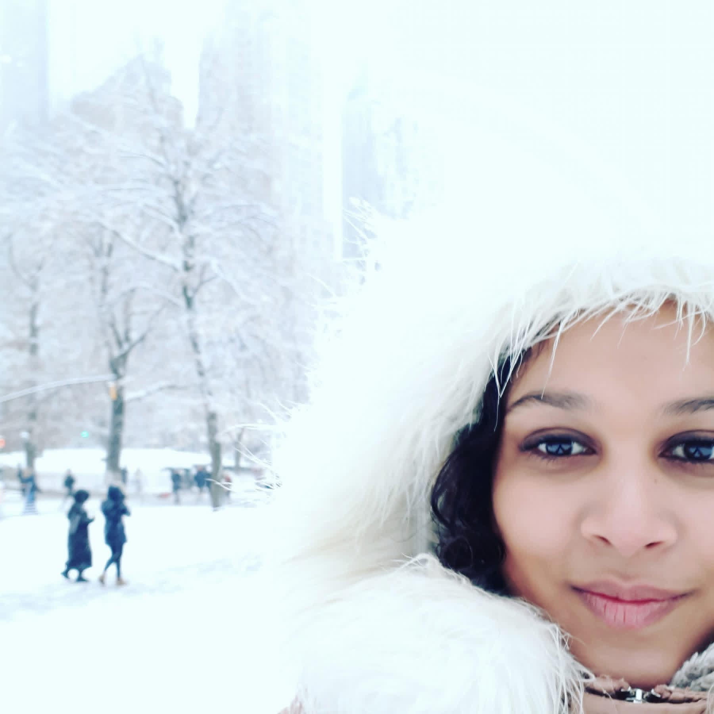

Marrakech
Carnet de voyage
Studio créatif voyage, hôtellerie & lifestyle
J’aide les lieux, expériences et marques à raconter leur univers à travers du contenu visuel, éditorial et social media inspiré du voyage.
Station Découvertes est née d’une envie simple : garder une trace des lieux qui marquent, des instants qui inspirent et des expériences qui donnent envie de repartir.
À travers mes voyages, mes escapades au Québec, mes coups de cœur hôteliers, mes belles adresses et mon regard sur l’art de vivre autour du monde, je partage un univers fait de paysages, d’ambiances, de moments vrais et d’inspirations visuelles.
Ici, le voyage ne se résume pas seulement à une destination. C’est une lumière, une rencontre, une atmosphère, une émotion. C’est cette sensation particulière qu’un lieu peut laisser en nous, parfois longtemps après l’avoir quitté.
Au fil des années, j’ai exploré plusieurs coins du monde — de l’Amérique latine à l’Océanie, en passant par l’Afrique, l’Asie, l’Europe et le Canada — avec toujours cette même curiosité : découvrir autrement, observer les détails, comprendre l’âme d’un lieu et transmettre ce que j’ai ressenti.
Aujourd’hui, Station Découvertes évolue vers un espace plus créatif, à la croisée du voyage, de l’hôtellerie et de l’art de vivre. Un lieu où je partage mes carnets de voyage, mes inspirations, mes coups de cœur, mais aussi mon regard sur les marques, les lieux et les expériences qui savent créer une vraie émotion.
Que tu sois ici pour t’inspirer, préparer une escapade, découvrir de belles adresses ou simplement entrer dans mon univers, bienvenue à la station.
Ici, on prend le temps de regarder, de ressentir et de raconter.
Photos, vidéos, reels et stories immersives.
Récits de voyage, articles et textes inspirants.
Partenariats avec marques de voyage et lifestyle.
Carnets de voyage, adresses et bons plans.
Mon univers
Du bout du monde aux adresses cachées, je capture des instants vrais et je les transforme en histoires qui inspirent.
En savoir plus sur moi +
Derrière Station Découvertes, il y a moi : Srija.
J’ai toujours eu envie de découvrir, de voyager et de rencontrer de nouvelles personnes. Cette curiosité a pris une vraie place dans ma vie avec mon premier grand voyage seule.
À la base, je voulais partir pour apprendre à parler anglais. Puis, en 2010, j’ai découvert l’existence du PVT. Parmi les pays qui l’offraient, il y avait la Nouvelle-Zélande. Et là, mon choix a été évident.
Depuis toute petite, je suis une grande fan du Seigneur des Anneaux. J’ai toujours été fascinée par cet univers, son histoire, ses paysages et cette impression d’évasion qu’il procure. Encore aujourd’hui, cette fascination fait partie de moi. Savoir qu’une partie de cet univers avait été tournée en Nouvelle-Zélande a suffi à me convaincre : je voulais partir là-bas.
Je suis donc partie sans trop me poser de questions, sans vraiment réaliser la distance, ni tout ce que ce voyage allait déclencher.
C’est à partir de là que ma soif de voyage a réellement commencé.
Au début, j’étais backpackeuse dans l’âme, à 10 000 %. Je voulais partir loin, bouger, explorer, vivre simplement, rencontrer du monde et découvrir le plus possible. Avec les années, ma façon de voyager a évolué. J’ai commencé à chercher davantage les belles adresses, les hébergements avec du charme, les endroits où bien manger, les lieux qui ont une atmosphère particulière et les expériences qui rendent un voyage encore plus mémorable.
Station Découvertes est né de cette évolution : l’envie de partager mes voyages, mes coups de cœur, mes bonnes adresses et mon regard sur les lieux que je découvre.
Ici, je raconte une façon de voyager qui mélange curiosité, authenticité et esthétique — entre l’esprit libre de la backpackeuse que j’étais, et l’envie d’aujourd’hui de découvrir des endroits qui ont du caractère.
Destinations à la une
Carnet de voyage
Guide & bonnes adresses
Expériences & conseils
Lieux & adresses